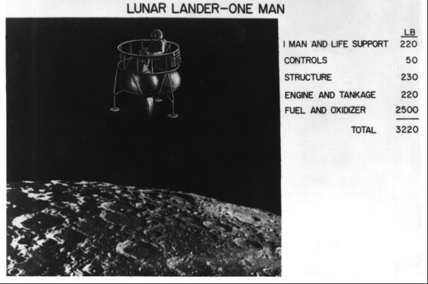
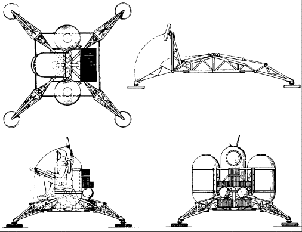

Most of the early criticism of the lunar rendezvous scheme stemmed from a concern for overall mission safety. In the minds of many, rendezvous - finding and docking with a target - would be a difficult task even in the vicinity of the earth. This concern was the underlying reason for the trend toward larger and larger Saturns (C-2 through C-5) to lessen the number of maneuvers required. After all, von Braun had once suggested that as many as 15 launchings of the smaller launch vehicles might be needed for one mission. During earth-orbital operations, the crew could return to the ground if they failed to meet their target vehicle or had other troubles. In lunar orbit, where the crew would be days away from home, a missed rendezvous spelled death for the astronauts and raised the specter of an orbital coffin circling the moon, perhaps forever. And all this talk about rendezvous came at a time when NASA had only a modicum of space flight experience of any kind. It is not surprising, therefore, that Houbolt had trouble swinging others away from their advocacy of direct flight or earth-orbit rendezvous.
Fears for crew safety and lack of experience were not the only factors; the Langley approach was criticized on another score - one as damning as the danger of a missed rendezvous. One of the principal attractions of Houbolt's mode was the weight reduction it promised; but he and his colleagues, in trying to sell the mode, had oversold this aspect. Many who listened to the Langley team's proposals simply did not believe the weight figures cited, especially that given for the lunar landing vehicle. In the lunar mission studies at Vought Astronautics, Dolan and his team had given much thought to designing the hardware, including a landing vehicle. Their weight calculations for a two-man lunar landing module were much higher than those proposed by the Langley engineers. Vought's study projected a 12,000-kilogram vehicle, most of which was fuel. Empty, the lander would weigh only 1,300 kilograms.37
But, until late 1961, no one in NASA except Langley had really looked very hard at lunar landing vehicles. Using theoretical analyses and simulations, the rendezvous team at the Virginia center had studied hardware, "software" (procedures and operational techniques), flight trajectories, landing and takeoff maneuvers, and spacecraft systems (life support, propulsion, and navigation and guidance).38 The studies formed a solid foundation for technical design concepts for a landing craft.

This sketch is an artist's concept of a small lunar lander during descent to the surface of the moon, as proposed by Langley Research Center employees in October 1961.
Langley's brochure for the Golovin Committee described landers of varied sizes and payload capabilities. There were illustrations and data on a "shoestring" vehicle, one man for 2 to 4 hours on the moon; an "economy" model, two men and a 24-hour stay time; and a "plush" module, two men for a 7-day visit. Weight estimates for the three craft, without fuel, were 580, 1,010, and 1,790 kilograms, respectively. Arthur Vogeley pictured the shoestring version as a solo astronaut perched atop an open rocket platform with landing legs. To expect Gilruth's designers to accept such a "Buck Rogers space scooter" would seem somewhat optimistic.39

These engineering drawings were made by Harry C. Shoaf (Space Task Group Engineering Division 15 November 1961 of a proposed lunar lander to be used with an advanced version of the Mercury spacecraft.
The same sort of minimal design features extended to subsystems, and structural weights further reflected Langley's drive toward simplicity. In February 1961, at NASA's intercenter rendezvous conference, Lindsay J. Lina and Vogeley had described the most rudimentary navigation and guidance equipment: a plumb bob, an optical sight, and a clock. This three-component system was feasible, they said, "only because maximum advantage is taken of the human pilot's capabilities." Even some of those on the Langley team criticized this kind of thinking; John Eggleston, for one, labeled it impractical.40
Despite Houbolt's frustration, his missionary work had stimulated interest outside Langley. Within the Office of Manned Space Flight, George Low, Director of Spacecraft and Flight Missions, commented that "the 'bug' approach may yet be the best way of getting to the moon and back."41 And Houbolt had finally struck a responsive chord when giving his sales talk to the Space Task Group in August. At this briefing, James Chamberlin, Chief of the Engineering Division, had been very attentive and had requested copies of the Langley documents. All during the year, Chamberlin and his team had been working on a study of putting two men in space in an enlarged Mercury capsule (which later emerged as Project Gemini).42 Although this successor to Mercury had been conceived as earth-orbital and long-duration, Chamberlin thought it might fly to the moon, as well. Seamans recalled that Chamberlin "was trying to develop something that was almost competitive with the Apollo itself." Chamberlin did, indeed, offer an alternative to Apollo. He and several of his colleagues proposed using the two-man craft and lunar rendezvous in conjunction with a one-man lunar lander, which in many respects resembled the small vehicles studied by Lang1ey.43
Although Chamberlin could get approval only for the earth-orbital part of his plan, one of his principal objectives - rendezvous - was highly significant. It marked the beginning of the first important shift in the Apollo mode. Gilruth and his engineers began to perceive advantages they had not previously appreciated.
Growing interest in lunar-orbit rendezvous stemmed partially from disenchantment with direct flight. The Space Task Group had become increasingly apprehensive about landing on the moon in one piece and with enough fuel left to get back to earth. The command section it had under contract was designed as an earth-orbital, circumlunar, and reentry vehicle. It could not fly down to the surface of the moon. Lunar rendezvous, which called for a separate craft designed for landing, became more inviting.44
Gilruth's engineers had worked on several designs for a braking rocket for lunar descent. In a working paper released in April 1961, Apollo planners had tried to size a propulsion system for landing, even though no booster had yet been chosen to get it to the moon. Two methods for landing were explored. The first was to back the vehicle in vertically, using rockets to slow, then stop, the spacecraft, setting it down on its deployed legs. The second technique was to fly the spacecraft in horizontally, like an aircraft. In this case, the legs would be deployed from the side of the craft instead of from the bottom.45
In the summer of 1961, when the command module contract was being advertised, Max Faget described some of the problems he anticipated with the landing itself. All other phases of the mission could be analyzed with a fair degree of certainty, he said, but the actual touchdown could not, since there was no real information on the lunar surface. Exhaust from rocket engines on loose rocks and dust might damage the spacecraft, interfere with radar, and obstruct the pilot's vision. Faget said the final hovering and landing maneuvers must be controlled by the crew to ensure landing on the most desirable spot. The Apollo development plan, in its many revisions, merely said that the lunar landing module would be used for braking, hovering, and touchdown, as well as a base for launching the command ship from the moon.46
About the time of the contract award, Abe Silverstein left NASA Headquarters to become Director of Lewis Research Center.47 It had become increasingly apparent that Apollo would probably use one rendezvous scheme or another, and he was among the staunchest advocates of big booster power and direct flight. Concurrently with Silverstein's return to Cleveland, Lewis was assigned to develop the lunar landing stage. Gilruth and Faget did not like this division of labor, as it added a complex management setup to the technical difficulties of matching spacecraft and landing stage.
Faget proposed a different propulsion module from the one previously envisioned for the descent to the lunar surface. He suggested taking the legs off the landing module and making it into just a braking stage, which he called a "lunar crasher." Once this stage had eased the spacecraft down near the surface, it would be discarded to crash elsewhere before the Apollo touched down. The Apollo spacecraft would then consist of the command center and two propulsion modules, one to complete the landing and the other to boost the command module from the surface. Since the crasher's only job was to slow the spacecraft, it was not part of the vehicle's integral systems, which decreased the technical interfaces required and minimized Lewis' role in the hardware portion of Apollo. Faget based his proposal on some sound technical reasoning. The crasher engines would be pressure-fed, no pumps would be needed, and the vehicle could be controlled by turning the engines off and on as long as the propellant lasted. Pump-fed engines, on the other hand, depended on complex interactions to vary the thrust. Faget and Gilruth liked the pressure-fed system, and so did Silverstein.48
Although relations with Lewis were easier after the adoption of the crasher, the Houston engineers were still worried about the complexities of an actual landing. As Faget later said, "We had all sorts of little ideas about hanging porches on the command module, and periscopes and TV's and other things, but the business of eyeballing that thing down to the moon didn't really have a satisfactory answer. . . . The best thing about the [lunar rendezvous concept] was that it allowed us to build a separate vehicle for landing."49 Caldwell Johnson, one of the chief contributors to the Apollo command module design, had much the same reaction. He said, "We continued to pursue the landing with a big propulsion module and the whole command and service module for a long, long time, until it finally became apparent that this wasn't going to work."50
By the end of 1961, the newly named Manned Spacecraft Center had virtually swung over to the lunar-orbit rendezvous idea. Gilruth, Faget, and the other Apollo planners conceded that this approach had drawbacks: a successful rendezvous with the mother craft after the bug left the lunar surface was an absolute necessity, and only two of the three crew members would be able to land on the moon. But the stage had been set for an intensive campaign to sell the von Braun team on this mode. At Headquarters, Director of Manned Space Flight Holmes wanted the two manned space flight centers to agree on a single route - he did not expect to get this consensus easily.`51
37. Richard B. Canright to James D. Bramlet et al., no subj., 27 Nov. 1961, with enc., Canright, "The Intermediate Vehicle," 22 Nov. 1961; James F. Chalmers, minutes of LLVPG general meeting, 28 Aug. 1961; O'Neal memo, 30 Jan. 1961; Clark enc., "Manned Modular Multi-Purpose Space Vehicle."
38. [Houbolt et al.], "Manned Lunar Landing through Lunar-Orbit Rendezvous"; Eggleston interview.
39. [Houbolt et al.], "Manned Lunar Landing through Lunar-Orbit Rendezvous"; Bird and Houbolt interviews.
40. Lindsay J. Lina and Arthur W. Vogeley, "Preliminary Study of a Piloted Rendezvous Operation from the Lunar Surface to an Orbiting Space Vehicle," Langley Research Center, 21 Feb. 1961; Houbolt and Eggleston interviews.
41. George M. Low to Dir., NASA OMSF, "Comments on John Houbolt's Letter to Dr. Seamans," 5 Dec. 1961.
42. Purser to Gilruth, "Log for Week of August 28, 1961," 5 Sept. 1961; Bird, "Short History," p. 4; Houbolt interview; STG, "Preliminary Project Development Plan for an Advanced Manned Spacecraft Program Utilizing the Mark II Two Man Spacecraft," 14 Aug. 1961.
43. Seamans interview, 26 May 1966; Harry C. Shoaf, interview, Cocoa Beach, Fla., 10 Oct. 1968.
44. Seamans interview, 26 May 1966; Purser to Howard Margolis, 15 Dec. 1970. See also John D. Hodge, John W. Williams, and Walter J. Kapryan, "Design for Operations," in "NASA-Industry Apollo Technical Conference," pt. 2, pp. 41-56.
45. H. K[urt] Strass, "A Lunar Landing Concept," in Strass, ed., "Project Apollo Space Task Group Study Report, February 15, 1961," NASA Project Apollo working paper no. 1015, 21 April 1961, pp. 166-74; Senate Committee on Aeronautical and Space Sciences, NASA Authorization for Fiscal Year 1961: Hearings on H.R. 6874, 87th Cong., 1st sess., 1961, pp. 71-75.
46. Maxime A. Faget, "Lunar Landing Considerations," in "NASA-Industry Apollo Technical Conference," pt. 1, pp. 89-97; STG, "Project Apollo Spacecraft Development, Statement of Work, Phase A," 28 July 1961; STG, "Preliminary Project Development Plan for Apollo Spacecraft," 9 Aug. 1964, pp. 7-10; MSC, "Project Apollo Spacecraft Development Statement of Work," 27 Nov. 1961, p-p. 78-81.
47. Robert L. Rosholt, An Administrative History of NASA, 1958-1963, NASA SP-4101 (Washington, 1966), p. 222.
48. Seamans, interview, Washington,11 July 1969; Faget interview, 15 Dec. 1969; Faget, interview, comments on draft edition of this volume, Houston, 22 Nov. 1976.
49. Faget interview, 15 Dec. 1969.
50. Johnson, interview, Houston, 9 Dec. 1966.
51. Purser letter, 15 Dec. 1970.